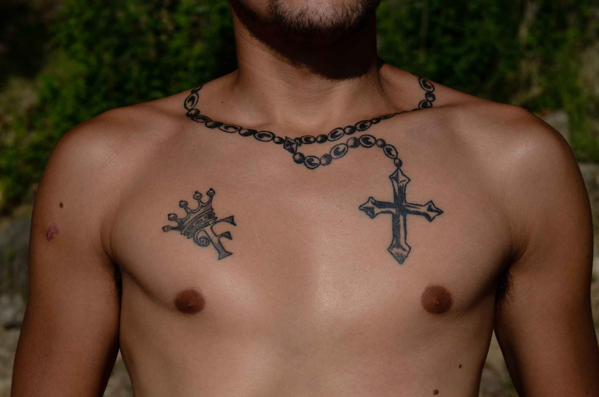
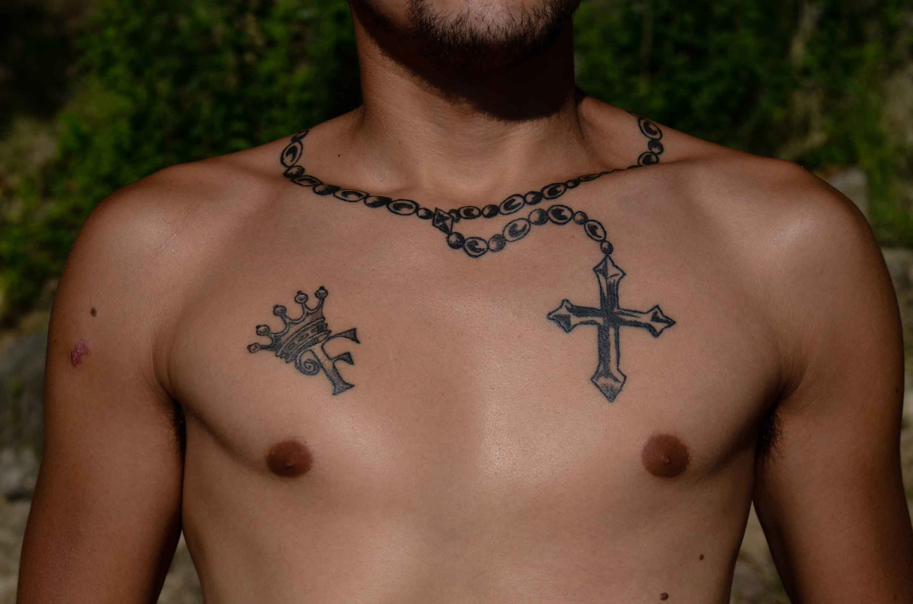
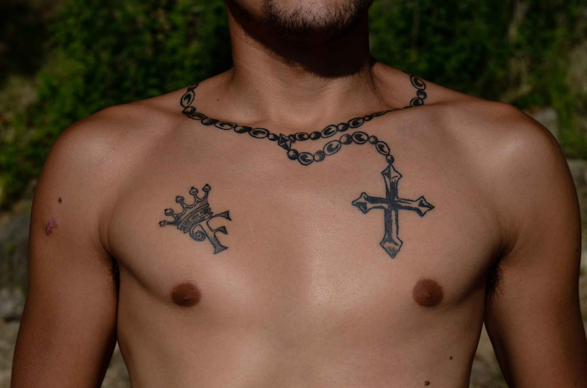
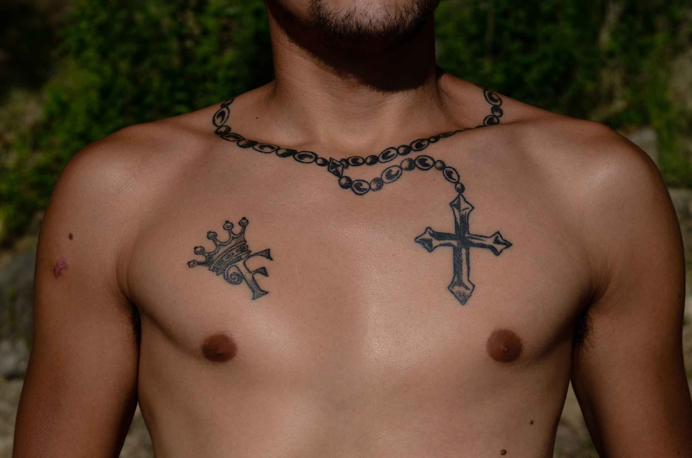

  
 Soy Juan Manuel Ramos Antúnez, nací en enero del año 1987 en Montevideo (Uruguay) y viví mi infancia en la ciudad de Chuy en la frontera con Brasil. Ingresé a la Facultad de Comunicación en 2007 y al año abandoné. En un momento de incertidumbre decidí hacer un taller en la EUF (Escuela Uruguaya de Fotografía), un primer acercamiento a la fotografía. El entusiasmo me llevó a profundizar los conocimientos y en 2008 ingresé a Taller Aquelarre donde cursé varios talleres y seminarios. Cursé la Licenciatura en Artes Plásticas y Visuales en la Escuela Nacional de Bellas Artes. En 2013 cursé el taller de fotoperiodismo con Armando Sartorotti y comencé a trabajar en el diario El Observador como reportero gráfico hasta 2015 . Participé en talleres con Joao Roberto Ripper (BR), Sub Cooperativa de Fotógrafos (ARG), Prime collective, Walter Astrada y Verónika Márquez. Comencé a trabajar en el periódico La Diaria y en el semanario Brecha. Realicé ensayos y fotorreportajes para la revista Lento y revista Ajena. Colaboré con la agencia EFE y medios gráficos como la revista finlandesa Paperii and puu, Midia Ninja y revista Waves (Brasil). Actualmente colaboro con el diario El País y realizo coberturas de eventos sociales y deportivos, y estoy desarrollando el trabajo final de egreso de la licenciatura: una experiencia colectiva que aborda la práctica artística en la ceguera.
Montevideo, Uruguay. Fotografía de Reinaldo Altamirano